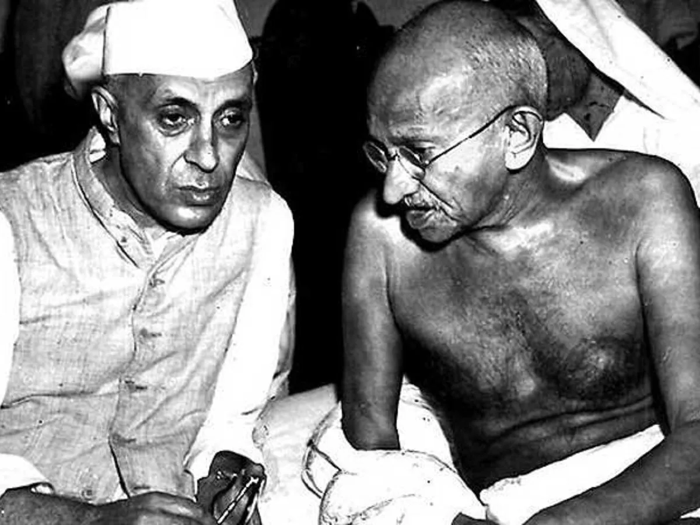

Mahatma Gandhi
About Mahatma Gandhi
Mohandas Karamchand Gandhi, known as Mahatma Gandhi, was an Indian lawyer, anti-colonial nationalist, and political ethicist. He led India to independence from British rule using nonviolent civil disobedience.
Gandhi is remembered for his principles of truth, non-violence, and civil disobedience, which continue to inspire people around the world in the fight for justice and equality.
Here's a timeline of Mahatma Gandhi's life:
- 1869 - Born in Porbandar, India
- 1893 - Travels to South Africa and becomes involved in the civil rights movement against racial discrimination
- 1915 - Returns to India and leads the Indian National Congress in the fight for independence
- 1947 - India gains independence from British rule
- 1948 - Assassinated in New Delhi, India
"You must be the change you want to see in the world."
-- Mahatma Gandhi